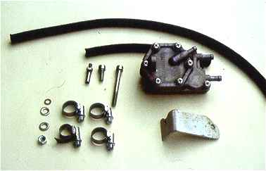
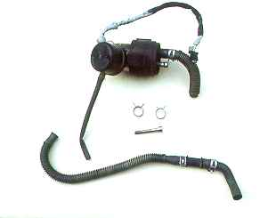

| MIRRORED FROM: http://www.reiseenduro.de/users/carlo/ as this page seems to have disappeared. Some images have gone missing. Carlo, please contact me if this mirror is not okay. |
Gasoline
pump update
for the Africa twin
On some models of the Africa twin (type RD07) the gasoline pump fails occasionally. Usually the electrical contacts inside the control unit of the pump are charred. It can be repaired by cleaning the contacts, however success is only of short duration. Sometimes the damage is caused by a missing ventilation hose, so that humidity can penetrate the contacts. If there is a hose, it is probably clogged, so that the humidity cannot get out. But sometimes everything is correct with the ventilation, but the pump fails nevertheless, as it happened to my buddy Stefan, whose Twin stopped already four times for that reason.
He had already installed a new (expensive!) pump, but it failed again after a couple of months. So I suggested to install a vacuum-driven pump of a Yamaha, e. g. XTZ 660, XTZ 750 or TDM 850, which I am using since a long time for the bigger tank of my Transalp. You can get this pump at a wrecker's for approx. DEM 40. - to DEM 80. -, a new (Yamaha) pump is for approx. DEM 160. -
In addition, you can purchase this kind of pump also from a KTM dealer, a new one is for about DEM 120. -
If you prefer genuine Honda parts, also the electrically driven pump of a CBR 600 F can be used. Except for the cap and a somewhat shorter power cable it is identical to the Africa Twin pump.
For the change you need the following parts:
Changing the pump
To change the pump, the fuel tank and the seat must be removed. Then remove the original gasoline pump. Remove the plug for the synchronous tester at the rear intake and put in the adapter for the vacuum hose.The thread has to be coated with Locktite before in order to seal it and to prevent a rotation of the adapter. Clamp the aluminum sheet in a parallel vice, bend it and form the shape with a file, so that the new fuel pump can be fixed at the crankshaft housing. Connect the 18 cm hose to the vacuum link of the pump and to the adapter at the intake and fix it with the hose clips. Then connect the carburetor's original fuel hose to the pressure plug of the pump. Install the fuel tank and connect the 43 cm hose to the suction plug of the pump and the fuel cock. Now, the seat can be attached. Make shure, that the pump and the hoses don't scrub at the frame or somewhere else. Open the fuel cock and start the engine.
According to Stefan his twin starts better than before with the modified gasoline pump. Additionally the weigth of his bike is now reduced by 270 g, which is noticeable in view to its 53 litre seizing fuel tank :-)).